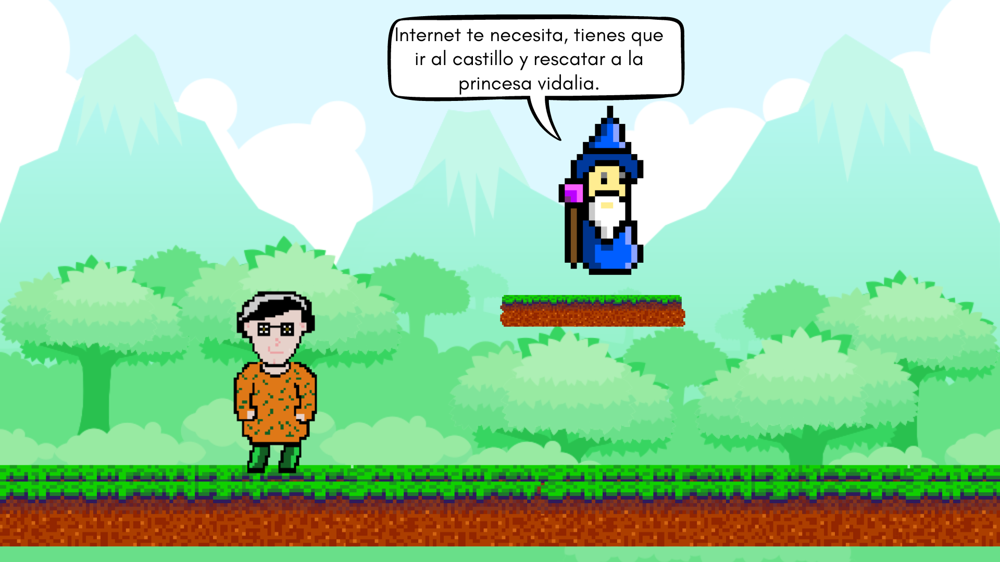
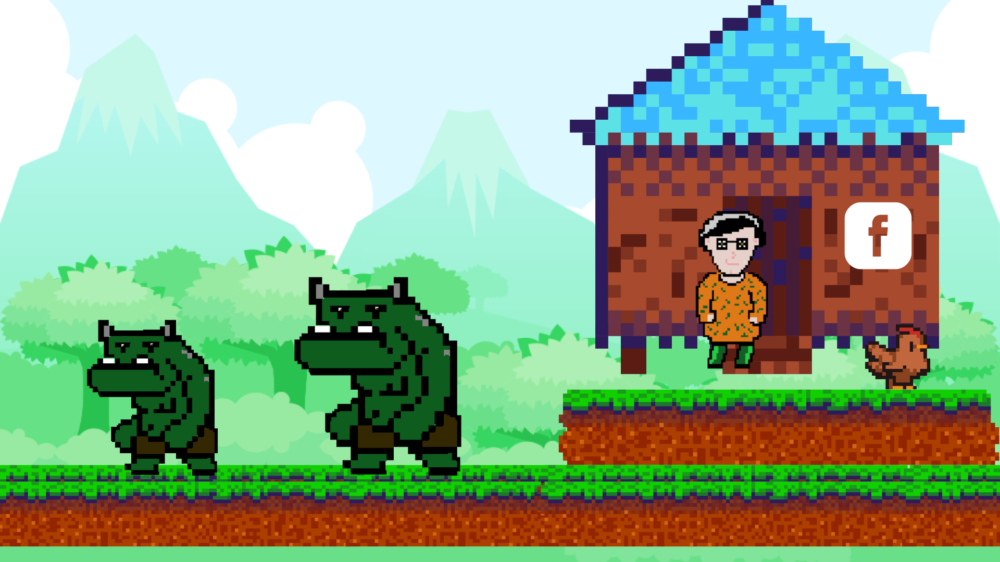

La familia real era dueña de internet, solo tenían una hija era la hermosa princesa vidalia, un dia los malwares de internet comandados por el rey de los bugs “Serches” tiraron todo el internet, se apoderaron el castillo real y secuestraron a vidalia dentro del castillo.
Mago: Charlies eres el único en todo internet que no está esclavo de los malwares.
Charlies: Si… Yo solo estaba huyendo de todo y tengo mucho miedo.
Charlies: Yo no puedo hacer eso, nunca he hecho nada en mi vida y no podría lograrlo.
El mago insistió por mucho tiempo y logró convencer a charlies. Antes de emprender el rescate Charlies tenía que hacer un plan, porque se iba a enfrentar a un camino duro y difícil que ni siquiera conocía.

El plan era fácil para muchos pero realmente difícil para Charlies, sin embargo charlies salió con ansias a enfrentar todo el camino… Para llegar a la meta charlie tenía que pasar por 1 parte principal de internet -Facebook : Era la aldea donde se mantenía todo facebook y estaba contaminada por los malwares, Charlies tenía que matar a todos los malwares y restaurar facebook.
-El castillo: Aquí vivía la familia real y tendría que rescatar a la princesa vidalia, pero antes tendría que derrotar a todos los secuaces de Serches y pelear contra el.
Charlies comenzaba el camino llegando a la aldea de facebook, la aldea estaba destruida, no había ningún noble por las calles y lo que tenía que hacer charlies era llegar a la casa principal de la aldea y postear una publicación. Charlies comenzó peleando contra un malware y logró ganarle, sin embargo volvió a esconderse y tenía miedo de salir, tenía que llegar lo antes posible al castillo, el plan de Charlie era simple:
Llegar a la casa principal y postear una publicación, Charlie iba a distraer a todos los malwares cercanos para poder llegar a la casa principal, entonces Charlie tomó su celular y se dio cuenta que en facebook lo unico que podia hacer era hacer lives, se acordó que era moderador de una página del castillo.

Charlies salió corriendo de la aldea Facebook logrando llegar al camino que lo conducirá al castillo, Charlies llegó al castillo y se encontró con la realidad, todo estaba lleno de secuaces de Serches, que buscaban dominar todo internet.
El plan de Charlies para rescatar a la princesa era derrotar a todos los secuaces de serches y llegar a la habitación secreta para rescatar a la princesa que estaba secuestrada en el castillo.